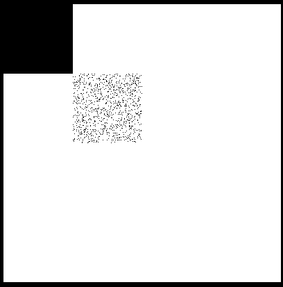
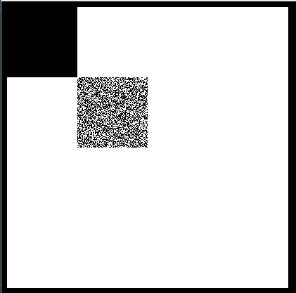
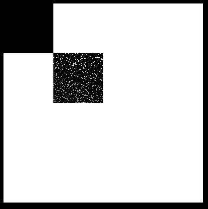

纯JS实现像素逐渐显示
本文最后更新于：12 天前
就是对于新手的我，以前从来没有做过对像素进行操作的实例。于是把资料书找了出来，实现了这个功能，比较简单，大神勿喷。下面是效果图，因为重在思路，效果就简陋一些。



其实就是简单的用JS实现将左上角的矩形随时间图像逐渐显示在它的右下方。
首先，先把思路架构起来，因为对像素操作，所以需要用到canvas。
然后，我们 需要画一个矩形，并且需要获取到它的每一个像素的值，即每一个像素的4要素，rgba。（方法getImageData，4个参数，前两个坐标，X和Y，后两个是长和宽）
最后，用一个定时器实现逐渐显示的功能。（显示可以用putImageData，3个参数，第一个是需要显示的图像，第二和第三是坐标值XY）
然后我们开始动手敲代码：
我们可以先做出一个没有定时器的，也就是先试着获取到原矩形1/10的像素点，然后显示出来。
1 <!DOCTYPE html>
2 <html lang="en">
3 <head>
4 <meta charset="UTF-8">
5 <style>
6 body{
7 background-color: black;
8 }
9 canvas{
10 background-color: white;
11 }
12 </style>
13 <title>Title</title>
14 <script>
15 window.onload = function(){
16 var oC = document.querySelector("#c");
17 var oGc = oC.getContext("2d");
18 oGc.fillRect(0,0,100,100);//画原矩形
19
20 var rectData = oGc.getImageData(0,0,100,100);//获取原矩形的像素点的值
21 var w = rectData.width;//原矩形的宽
22 var h = rectData.height;//原矩形的长
23
24 var dataC = randomData(w*h,w*h/10);//randomData方法实现随机从原矩形的像素点中抽取一部分出来
25 var newData = oGc.createImageData(w,h);//创造一个新的矩形
26
27
28 //dataC数组中存放的是第几个像素，*4是为了把图片的data数组定位到这个像素的数据的第一个值，然后加一是第二个，以此类推。
29 for(var j=0;j<dataC.length;j++){
30 newData.data[4*dataC[j]]=rectData.data[4*dataC[j]];
31 newData.data[4*dataC[j]+1]=rectData.data[4*dataC[j]+1];
32 newData.data[4*dataC[j]+2]=rectData.data[4*dataC[j]+2];
33 newData.data[4*dataC[j]+3]=rectData.data[4*dataC[j]+3];
34 }
35 oGc.putImageData(newData,w,h);
36
37 function randomData(allNum,nowNum) {
38 var dataA = [];
39 var dataB = [];
40 for(var i=0;i<allNum;i++){
41 dataA.push(i);
42 }
43
44 for(var i=0;i<nowNum;i++){
45 dataB.push(dataA.splice(Math.floor(Math.random()*dataA.length),1));
46
47 }
48 return dataB;
49
50 }
51
52 }
53 </script>
54 </head>
55 <body>
56 <canvas id="c" width="400" height="400"></canvas>
57 </body>
58 </html>其中因为getImageData的data属性是一个数组，而且数组中的存放的东西，就是我们需要的rgba4个数，存放形式为：
data[0]第一个像素点的r值:
data[1]:第一个像素点的g值
data[2]:第一个像素点的b值
data[3]:第一个像素点的a值
data[4]:第二个像素点的r值
data[5]:第二个像素点的g值
以此类推，4个一循环。
然后数组dataC里面存放的是取出的像素点位置，然后用乘以4和分别加一，加二，加三为了定位到每一个像素点的rgba分别的4个值。此时就能实现抽取一部分像素点显示的功能。
最后，将代码改进。
第一步，我们需要改进randomData这个函数，使之返回的数组是包含原矩形的所有像素。
1 function randomData(allNum,nowNum) {
2 var dataA = [];
3 var dataB = [];
4 for(var i=0;i<allNum;i++){
5 dataA.push(i);
6 }
7
8 for(var i=0;i<allNum/nowNum;i++){
9 var otherData = [];
10 for(var j=0;j<nowNum;j++){
11 otherData.push(dataA.splice(Math.floor(Math.random()*dataA.length),1));
12 }
13 dataB.push(otherData);
14 }
15 return dataB;
16 }嵌套了一层for循环，使返回的dataB数组里面分成了一定组数的一定量个像素点。
然后增加一个定时器，最终代码为：
1 <!DOCTYPE html>
2 <html lang="en">
3 <head>
4 <meta charset="UTF-8">
5 <style>
6 body{
7 background-color: black;
8 }
9 canvas{
10 background: #fff;
11 }
12 </style>
13 <title>Title</title>
14 <script>
15 window.onload = function(){
16 var oC = document.querySelector("#c");
17 var oGc = oC.getContext("2d");
18 oGc.fillRect(0,0,100,100);
19
20 var rectData = oGc.getImageData(0,0,100,100);
21 var w = rectData.width;
22 var h = rectData.height;
23
24
25 var dataC = randomData(w*h,w*h/10);
26 var newData = oGc.createImageData(w,h);
27
28 var iNum = 0;
29
30 var timer = setInterval(function () {
31 for(var j=0;j<dataC[iNum].length;j++){
32 newData.data[4*dataC[iNum][j]]=rectData.data[4*dataC[iNum][j]];
33 newData.data[4*dataC[iNum][j]+1]=rectData.data[4*dataC[iNum][j]+1];
34 newData.data[4*dataC[iNum][j]+2]=rectData.data[4*dataC[iNum][j]+2];
35 newData.data[4*dataC[iNum][j]+3]=rectData.data[4*dataC[iNum][j]+3];
36
37 }
38 oGc.putImageData(newData,w,h);
39
40 if(iNum<9){
41 iNum++;
42 }
43 else{
44 iNum=0;
45 oGc.clearRect(w,h,w,h);
46 for(var i=0;i<newData.data.length;i++){
47 newData.data[i]=0;
48 }
49 }
50 },200);
51
52
53 function randomData(allNum,nowNum) {
54 var dataA = [];
55 var dataB = [];
56 for(var i=0;i<allNum;i++){
57 dataA.push(i);
58 }
59
60 for(var i=0;i<allNum/nowNum;i++){
61 var otherData = [];
62 for(var j=0;j<nowNum;j++){
63 otherData.push(dataA.splice(Math.floor(Math.random()*dataA.length),1));
64 }
65 dataB.push(otherData);
66 }
67 return dataB;
68 }
69
70 }
71 </script>
72 </head>
73 <body>
74 <canvas id="c" width="400" height="400"></canvas>
75 </body>
76 </html>其中31到35行的for循环还是一样将原矩形的像素点传递给新矩形。但是这一次是用iNum来实现分批次的传递和显示。注意这里的dataC，也就是randomData函数返回的数组是一个二维数组。最后用一个if—else判断来控制计时器的继续计时和停止计时。
因为是新手，有写的不好的地方，请多多见谅，有问题或者看不懂的地方可以咨询我。大家一起努力。
本博客所有文章除特别声明外，均采用 CC BY-SA 4.0 协议 ，转载请注明出处！